samples — 公式サンプルの Direct3D 11 移植版
DxLib 公式の Direct3D 9 版シェーダーサンプルを、Direct3D 11(DxLib の既定)で動くように移植したものです。 公式の Direct3D 9 版と同じ絵になることを確かめたものだけを置いています。
- 原本との違いは、ソースの
【D3D11】のコメントで分かります。原本は../reference/d3d9_original/。 - 各サンプルのフォルダは、拡張機能(DxLib 開発環境)のプロジェクトと同じ並びです。
src/main.cpp、shaders/*VS.hlsl(頂点)・*PS.hlsl(ピクセル)、コンパイル先はshaders/bin/、素材はフォルダの直下。 shaders/DxLibVS.hlsli・DxLibPS.hlsli・DxLibCommon.hlsliは、DxLib が渡す定数(ビュー行列など)の宣言です。どのサンプルも同じ内容です(原本は_shared/)。並びが DxLib と一致していることは../verify/で確かめています。
一覧
A. 3D モデル描画の基本(公式「オリジナルシェーダーを使用した３Ｄモデルの描画基本」)
MV1SetUseOrigShader で、MV1 のモデルを頂点シェーダーとピクセルシェーダーの両方を自作して描く。
「SM」は Direct3D 9 版のシェーダーモデル。
| サンプル | 内容 | SM | 確認 |
|---|---|---|---|
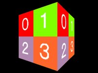 A01_NormalMesh_NoLight |
剛体メッシュのライティング無し描画 | 2.0 | 一致 |
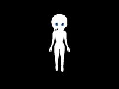 A02_SkinMesh4_NoLight |
１頂点へ影響を与えるフレームの数が１～４個のスキニングメッシュのライティング無し描画 | 2.0 | 一致 |
 A03_NormalMesh_NoLight_Fog A03_NormalMesh_NoLight_Fog |
剛体メッシュのライティング無しフォグあり描画 | 2.0 | 一致 |
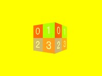 A04_NormalMesh_NoLight_Fog_SV3 |
剛体メッシュのライティング無しフォグあり描画（シェーダーモデル３．０版） | 3.0 | 一致 |
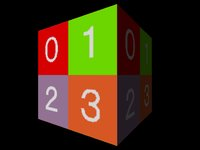 A05_NormalMesh_DirLight |
剛体メッシュのディレクショナルライトあり描画 | 2.0 | 一致 |
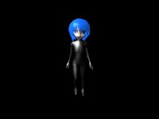 A06_SkinMesh4_DirLight |
１頂点へ影響を与えるフレームの数が１～４個のスキニングメッシュのディレクショナルライトあり描画 | 2.0 | 一致 |
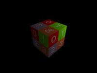 A07_NormalMesh_PointLight |
剛体メッシュのポイントライトあり描画 | 2.0 | 一致 |
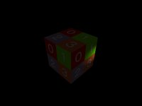 A08_NormalMesh_SpotLight |
剛体メッシュのスポットライトあり描画 | 2.0 | 一致 |
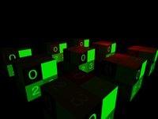 A09_NormalMesh_DirPointLight |
剛体メッシュのディレクショナルライトとポイントライトあり描画 | 2.0 | 一致 |
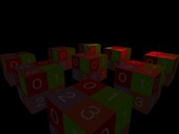 A10_NormalMesh_SpotPointLight |
剛体メッシュのスポットライトとポイントライトあり描画 | 2.0 | 一致 |
 A11_NormalMesh_DirLight_Phong A11_NormalMesh_DirLight_Phong |
剛体メッシュのディレクショナルライトありフォンシェーディング描画 | 3.0 | 一致 |
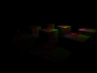 A12_NormalMesh_PointLight_Phong |
剛体メッシュのポイントライトありフォンシェーディング描画 | 3.0 | 一致 |
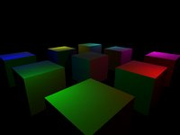 A13_NormalMesh_PointLight6_Phong |
剛体メッシュのポイントライトありフォンシェーディング描画（ポイントライト６つ版） | 3.0 | 一致 |
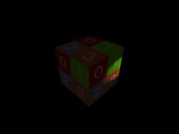 A14_NormalMesh_SpotLight_Phong |
剛体メッシュのスポットライトありフォンシェーディング描画 | 3.0 | 一致 |
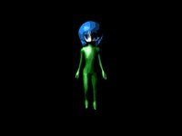 A15_SkinMesh4_DirLight_Toon |
ＭＭＤ互換のトゥーンレンダリング スキニングメッシュでディレクショナルライト一つ | 2.0 | 一致 |
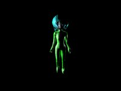 A16_SkinMesh4_DirSpotPointLight_Toon |
ＭＭＤ互換のトゥーンレンダリング スキニングメッシュでディレクショナルライトとスポットライトとポイントライト一つづつ | 2.0 | 一致 |
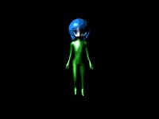 A17_SkinMesh4_DirLight_Toon_Phong |
ＭＭＤ互換のトゥーンレンダリング スキニングメッシュでディレクショナルライト一つのフォンシェーディング | 3.0 | 一致 |
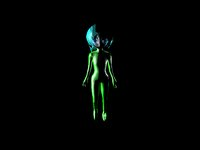 A18_SkinMesh4_DirSpotPointLight_Toon_Phong |
ＭＭＤ互換のトゥーンレンダリング スキニングメッシュでディレクショナルライトとスポットライトとポイントライト一つづつのフォンシェーディング | 3.0 | 一致 |
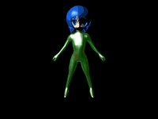 A19_SkinMesh4_DirLight_SphereMap_Toon_Phong |
ＭＭＤ互換のトゥーンレンダリング スキニングメッシュでディレクショナルライト一つとスフィアマップのフォンシェーディング | 3.0 | 一致 |
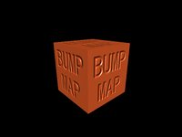 A20_NormalMesh_DirLight_NrmMap |
法線マップ付き剛体メッシュのディレクショナルライトあり描画 | 3.0 | 一致 |
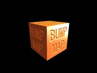 A21_NormalMesh_DirSpotPointLight_NrmMap |
法線マップ付き剛体メッシュのディレクショナルライトとスポットライトとポイントライト一つづつ描画 | 3.0 | 一致 |
B. 応用サンプル(公式「３Ｄアクション」などの D3D9 版シェーダーサンプル)
描画先に描いて後で読む、C++ から行列や値を渡す、といった組み合わせのサンプル。
| サンプル | 内容 | 確認 |
|---|---|---|
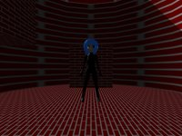 B1_3DAction_DepthShadow |
深度シャドウ(3D アクションの基本に影を付ける) | 一致 |
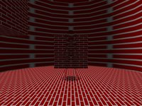 B2_3DAction_OpticalCamouflage |
光学迷彩(背景をゆがめて透けて見せる) | 一致(基準 0.5%) |
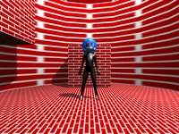 B3_3DAction_PointLight_DepthShadow |
ポイントライトの深度シャドウ(6 方向の深度記録画像) | 一致(基準 0.5%) |
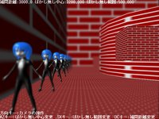 B4_DepthOfField |
被写界深度(ピントの前後をぼかす) | 一致(原本の不具合を同じように直して比較。基準 3%) |
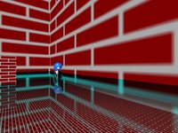 B5_FresnelReflection |
フレネル反射(見る角度で映り込みの強さが変わる水面) | 一致 |
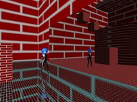 B6_Mirror |
鏡(鏡に映る視点で描いた画像を貼る) | 一致 |
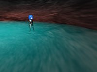 B7_VolumeWater |
厚みのある水(水の深さで透明度を変える) | 一致 |
- 基準を変えたものは、理由を各
sample.jsonのdiff_reasonに書いた。B2・B3 はレンガの模様の細部(モデルのテクスチャの補間の違い)、B4 は画面の文字と標準の描画の明るさ。移植したシェーダーの処理そのものは一致している。 - B4 の原本は、今の DxLib(3.24f)では Direct3D 9 でも正しく動かない(深度値を書くピクセルシェーダーの出力のアルファが 0 で、何も書き込まれず画面全体がぼける。公式ページの画像と違う)。移植版はアルファを 1 に直し、比べるときは原本にも同じ修正を当てた(
original_patches。原本のファイルは書き換えない)。 - B3 の原本は SDK に無い DxLib 内部のヘッダー(
DxGraphics.h)を include していて、そのままではビルドできない(中身は使っていない)。移植版はこの行を消し、比べるときは原本からこの行だけ除いてビルドした(original_remove_lines)。 - 3D アクションの 3 本は NPC の動きに乱数を使うので、比べるときは乱数の種を固定した(
_verify/verify_hook.h)。
D. この教材のためのサンプル(公式の Direct3D 9 版は無い)
| サンプル | 内容 | 確認 |
|---|---|---|
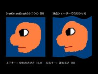 D1_Sprite2DVertexShader |
2D の絵を頂点シェーダーでなびかせる。正射影カメラ + 3D の板(src/Camera2D.h)で、2D と同じ見た目のまま自作の頂点シェーダーを使う(仕様書 3.4) |
verify/ の ortho2d(DrawGraph と画素単位で一致など 10 項目)。run.py では動くことだけ |
C. 関数リファレンスのサンプル
| サンプル | 内容 | 描画 | 確認 |
|---|---|---|---|
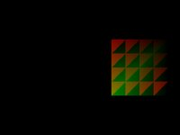 C1_VertexShaderTest |
頂点シェーダーの基本。C++ から座標と色を渡す | 3D | 一致 |
| ピクセルシェーダーの基本。赤と青を入れ替える | 2D | 一致 | |
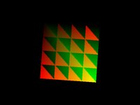 C3_SetVSConstFMtxTest |
C++ から行列を渡して回転させる | 3D | 一致 |
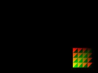 C4_SetVSConstFArrayTest |
C++ から配列と整数を渡す | 3D | 一致 |
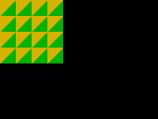 C5_SetPSConstFTest |
ピクセルシェーダーに C++ から色を渡す | 2D | 一致 |
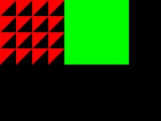 C6_SetRenderTargetTest |
2 つの描画先に同時に描く | 2D | 一致 |
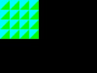 C7_DrawPolygonIndexed2DToShader |
インデックス付きの 2D 描画(シェーダーは C2 と同じ) | 2D | 一致 |
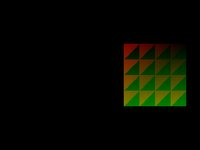 C8_DrawPolygonIndexed3DToShader |
インデックス付きの 3D 描画(シェーダーは C1 と同じ) | 3D | 一致 |
「一致」: 公式の Direct3D 9 版を Direct3D 9Ex で動かした絵と、移植版を Direct3D 11 で動かした絵を、同じフレームで撮って比べた。相手の絵の周り 3×3 画素の色の範囲に収まっていれば一致とみなし、外れた画素が 0.2% 以下なら合格(Direct3D 9 と 11 はピクセルの中心が半ピクセル違い、3D の描画ではテクスチャの模様の境目が 1 画素ずれたり、拡大したテクスチャの境目の中間の色が変わったりするため。仕様書 11 章)。平らな面の色やライティングが違えば、周りの画素も同じように違うので見つかる。2026-09-26 に全 36 本。
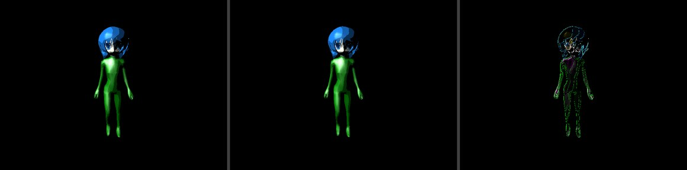
samples/build/A15_SkinMesh4_DirLight_Toon/compare.png を縮小)。左から、原本(Direct3D 9)| 移植版(Direct3D 11)| 差 × 4。差がほぼ真っ黒なら一致です。Direct3D 9 版から変えたこと(共通)
| Direct3D 9 版 | Direct3D 11 版 |
|---|---|
SetVSConstF / SetPSConstF / SetVSConstFMtx / SetVSConstFArray |
CreateShaderConstantBuffer で作った定数バッファを b4 に置く(Direct3D 11 では前者は何もしない) |
ResetVSConstF など |
DeleteShaderConstantBuffer |
HLSL の float4 x : register( c10 ) ; |
cbuffer … : register( b4 ) { float4 x ; } |
ビュー行列・射影行列を register( c6 ) などで読む |
#include "DxLibVS.hlsli" して g_Base.ViewMatrix などで読む |
sampler s : register( s0 ) ; と tex2D( s, uv ) |
Texture2D t : register( t0 ) ; SamplerState s : register( s0 ) ; と t.Sample( s, uv ) |
| 頂点の入力は使う要素だけ | VERTEX3DSHADER の 9 要素を全部、同じ順番で書く |
| ピクセルの入力は名前で結び付く | 頂点シェーダーの出力と同じ順番で書く。2D は SV_POSITION, COLOR0, COLOR1, TEXCOORD0, TEXCOORD1 |
出力 POSITION / COLOR0 |
SV_POSITION / SV_TARGET0 |
C++ から渡した行列は mul( 行列, 座標 ) |
定数バッファに MATRIX をそのまま入れ、HLSL で row_major float4x4 として mul( 座標, 行列 )(C3) |
| フルスクリーンで起動 | ChangeWindowMode( TRUE ) を追加 |
| MV1 の頂点の入力(POSITION が float4、BLENDINDICES が NORMAL より前など) | Direct3D 11 の MV1 の頂点の並び(仕様書 5.3。POSITION は float3、TEXCOORD は float4、使わない TEXCOORD1 も書く) |
固定機能のフォグ(頂点シェーダーの出力 FOG) |
フォグの濃さを TEXCOORD1 で渡し、ピクセルシェーダーで g_Common.Fog.Color と混ぜる(A03) |
シェーダーモデル 2.0 は頂点シェーダーの COLOR の出力が 0〜1 に切り詰められる |
同じ見た目にするため、出力の前に saturate(A05〜A10・A15・A16) |
| 既定の 16 ビットカラーの画面のまま | 法線マップのサンプル(A20・A21)は SetGraphMode( 640, 480, 32 )。16 ビットカラーだと Direct3D 11 では法線マップの精度が落ちて明るさが変わる(仕様書 10.3) |
C++ から渡す自前の定数 matrix cfLightViewMatrix : register( c43 ) ; など |
cbuffer UserParam : register( b4 ) { matrix cfLightViewMatrix : packoffset( c0 ) ; }。C++ の MATRIX をそのまま入れれば、HLSL 側は Direct3D 9 版と同じ matrix(column_major)・同じ mul のままで同じ計算になる(B1・B3) |
| 使わない入力を宣言していてもよい(無い入力には既定の値が入る) | 頂点データに無い入力を宣言すると何も描かれない。原本の剛体メッシュ用のシェーダーにあったスキンメッシュ用の入力(BLENDINDICES など)は外した(B1・B3) |
シェーダーモデル 2.0 の sqrt は負の値の絶対値を取る |
負の値の sqrt は NaN。sqrt( abs( … ) ) にした(B5) |
ライトの色 cfLight.Diffuse などは float4 |
g_Common.Light[ n ].Diffuse は float3。float4( …, 0.0f ) にして使う |
ライトの Range_FallOff_AT0_AT1.x など、詰め込んだ float4 |
RangePow2・FallOff・Attenuation0〜2・SpotParam0〜1 の名前付きのフィールド |
確かめ方
python samples/sync_shared.py # _shared の .hlsli を各サンプルに複写し、ソースを BOM 付き UTF-8 にそろえる
python samples/run.py # 全サンプル。サンプル名を並べるとそれだけ。--compare-only で前回の撮影結果の比べ直しだけ
- 作業フォルダは
samples/build/<サンプル名>/(port/が移植版、orig/が原本、compare.pngが「原本 | 移植版 | 差 × 4」)。 - 原本も移植版も、
_verify/verify_hook.hをビルド時に差し込んで、決まったフレームで撮影して終了させる(ソースは書き換えない)。 - 原本のコンパイル済みシェーダーは、SDK の
サンプルプログラム実行用フォルダのものを使う。 - シェーダーは拡張機能と同じ手順(CP932 に変換 →
ShaderCompiler.exe、vs_4_0/ps_4_0)、C++ は拡張機能と同じ文字コードの指定(/source-charset:.932 /execution-charset:.932、ソースは BOM 付き UTF-8)でビルドする。 sample.jsonの書き方はrun.pyの先頭に書いてある。
素材
Tex1.bmp は DxLib の SDK(サンプルプログラム実行用フォルダ)のもの。A のモデル・画像は公式サイトの各サンプルの「実行に必要なファイル一式」のもの(A02・A11 は公式の zip が壊れているので、同じ素材を使う A06・A05 のもの)。いずれも DxLib の作者の権利物で、拡張機能の MIT ライセンスの対象外。